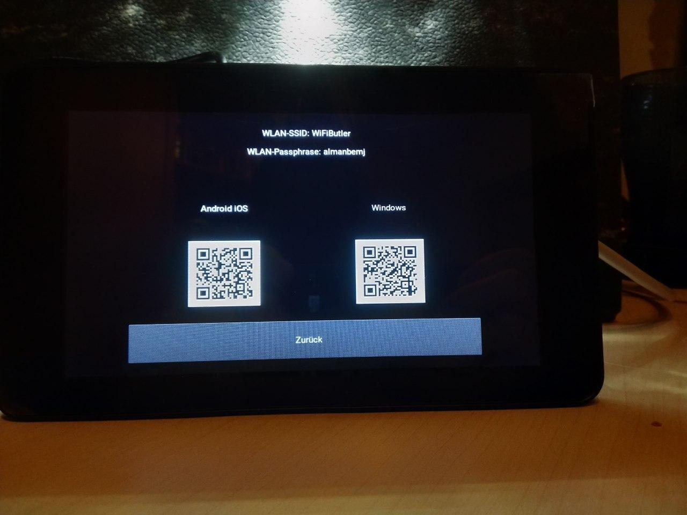

Projekt 4 Wifi-Butler
Immer WLAN für deine Freunde! / free wifi
In diesem Projekt werden wir mit einem Raspberry Pi einen Wifi-Butler erstellen.
Bevor wir aber dieses Projekt anfangen schau dir das Tutorial an: Tutorial »
Hier ein kleiner Vorgeschmack wie es am Ende aussieht:
Was ist ein Wifi Butler?
WiFiButler fuer ein Gaeste-Wlan, dass jeden Tag den Schluessel wechselt und einen einfachen Zugang via QR-Code-Scanner ermoeglicht. Dieser hostet ein eigenes Wlan-Netzwerk und dient nebenbei als elektronischer Bilderrahmen.Die Hardware
In meinem Beispiel verwende ich ein RaspberryPi 3 Model B+ un einen dazu passenden Raspberry Pi 7" Touch Display. Alternativ kann auch ein anderes RaspberryPi Model verwendet werden, manchen jedoch fehlen z.B. ein integrierter WiFi-Adapter oder ein Lan-Anschluss usw. im folgenden erklaere ich aber nur die Installation mit dem von mir verwendeten Modell. Genauso kann auch ein anderer Touchdisplay verwendet werden, jedoch sollte sichergestellt werden, dass auf dem verwendeten RaspbianOS (Linux) entsprechende Treiber dafuer vorhanden sind.Um den WiFiButler auf dem schon in den Touchdisplay einebauten PI zu installieren kann einfach eine USB-Tastatur an das Touchdisplay angeschlossen werden, natuerlich ist auch das Anschliessen einer Maus moeglich. Ansonsten kann einfach mit der Tastenkombination strg + alt + t ein Terminal geoeffnet werden. Es ist auch moeglich vom eigenen Rechner aus eine SSH-Verbindung herzustellen. Dafuer kann folgendes Tutorial verwendet werden: ssh Tutorial
Zum Einbau des RaspberryPi in den Display habe ich folgende Anleitung benutzt: Display Einbauen Hier sind Videos und einige Bilder zum Einbauen.


Nun kann das RaspberryPi gestartet werden, dabei faellt auf, dass das Bild auf dem Bildschirm auf dem Kopf steht. Um dies zu aendern, kann das Bild mit einem Eintrag in der Datei /boot/config.txt gedreht werden, dafuer muss dort am Ende der Datei folgende Zeile eingefuegt werden:
lcd_rotate=2Dafuer kann der Editor Nano benutzt werden, der Befehl lautet:
sudo nano /boot/config.txtDamit die Aenderung uebernommen wird, muss das PI neu gestartet werden.
Die Software
Um den WiFiButler einrichten zu koennen, muessen folgende Packete mit dem Packetmanager apt installiert werden:- dnsmasq
- hostapd
- python-kivy (wird spaeter installiert mit pip)
- qrencode
- rng-tools
- libsdl2-mixer-dev
- libsdl2-image-dev
- libsdl2-ttf-dev
- libsdl2-dev
sudo apt install dnsmasq hostapd qrencode rng-tools libsdl2-mixer-dev libsdl2-image-dev libsdl2-ttf-dev libsdl2-dev
Als erstes richten wir mit Hilfe des Tools dhcpd den auf dem RaspberryPi befindlichen WiFi-Adapter ein um unser eigenes Netzwerk zur Verfuegung stellen zu koennen. Fuer Interessierte hier ein wenig Theorie zum Verstaendnis dessen was wir tun: Im Normalfall erhaelt der verwendete Netzwerkadapter (Ethernet(LAN) oder WiFi(WLAN) seine IP-Adresse durch den dhcp Server des Routers/Accesspoint/Hardware-Firewall zugewiesen. Da wir den WiFi-Adapter als eigenen Accesspoint benutzen moechten, muessen wir diesem eine statische IP-Zuweisen. Dabei moechten wir den Geraeten die sich mit dem WiFiButler verbinden ein eigenes Subnet zuweisen, ueblicherweise laufen heimische Netzwerke im Subnet 192.168.0.* und nutzen die IP 192.168.0.1 als Gateway-Adresse. Hier verbirgt sich ein NAT (Network Adress Translation). Dieses leitet aus dem LAN-Netzwerk ankommende Anfragen, wenn diese nicht wieder in das eigene LAN-Netzwerk gehen, in das Internet (WAN) weiter, wenn nun von einem Server im Internet eine Antwort auf die entsprechende Anfrage kommt, hat sich das NAT gemerkt wo diese hin geroutet werden muss und leitet sie an die entsprechende IP-Adresse im LAN-Netzwerk weiter. Hat kein Geraet im LAN das Antwort-Packet angefordert, wird diese ueblicherweise verworfen (Firewall.)
Wir moechten, dass unser WiFi-Adapter ein eigenes (eher unuebliches) Subnet erhaelt, fuer dies habe ich den IP-Bereich 192.168.250.* gewaehlt. Ihr koennt natuerlich auch eine andere IP-Adresse verwenden, dabei ist es jedoch von Vorteil eine IP zu nutzen, die mit 192.168.*.* anfaengt, da diese IP-Adressen ueblicherweise fuer LAN-Netzwerke verwendet werden kann es so selten zu IP-Kollisionen kommen. Zusaetzlich sollte beachtet werden, dass im heimischen LAN kein anderes Subnet im gleichen IP-Bereich existiert 192.168.(-).*, (-) steht hierbei fuer eine einzigartige Zahl, die sonst kein Netzwerk im LAN verwenden sollte. Desweiteren ist es von Vorteil, das RaspberryPI spaeter mit dem LAN-Kabel, falls vorhanden, in den GaestePorts des eigenen Routers einzustecken, dadurch wird verhindert, dass Gaeste, die mit dem WiFi-Butler verbunden sind, Zugriff auf fest im heimischen Netzwerk installierte Geraete erhalten koennen. Um dem WiFi-Adpater eine statische IP zuweisen zu koennen, editieren wir die Datei /etc/dhcpcd.conf und tragen die weiter unten makierten Zeilen ein. Dies kann mit folgendem Kommando getan werden:
sudo nano /etc/dhcpcd.confDa der WiFi-Adapter in diesem Fall als Gateway fungiert, erhaelt er die IP-Adresse 192.168.250.1, und da nur der letzte Zahlenblock der IP in diesem Subnet variabel sein darf, benoetigen wir eine sogenannte Netzmaske mit dem Wert 24.
Theorie:
Eine Ipv5 Adresse besteht aus 4 Zahlenbloecken, die jeweils einen Wert von 0-255 annehmen koennen. Dies entspricht 256 Moeglichkeiten (2^8). Daraus ergibt sich die Netzmaske, soll nur der erste Zahlenblock fuer ein Subnet festgelegt werden, kann man dem Gateway dies mit der Netzmaske 8 mitteilen. In unserem Fall waere das dann 192.168.250.1/8, da wir aber die ersten drei Bloecke feststehend haben moechten, muessen wir fuer die Netzmaske 3*8 rechnen und erhalten die 24.
Nach dem Oeffnen der Datei /etc/dhcpcd.conf mit Nano fuegen wir am Ende der Datei folgende Zeilen ein:
interface wlan0
static ip_address=192.168.250.1/24etc_dhcpcd.conf
sudo systemctl restart dhcpcdAusserdem muss noch die Netzwerkverwaltung von Raspbian des WiFis gestoppt werden, dies geschieht mit dem Kommando:
sudo systemctl stop wpa_supplicant.serviceUm zu verhindern, dass der Service beim Neustarten wieder gestartet wird, verwenden wir folgendes Kommando:
sudo systemctl disable wpa_supplicant.serviceNun kann noch geprueft werden, ob der Service wirklich ausgeschaltet ist:
sudo systemctl status wpa_supplicant.serviceAls naechstes wird ein eigener DHCP-Server fuer WLAN konfiguriert. Dies geschieht mithilfe des Tools dnsmasq. Theorie: Der DHCP-Server sorgt dafuer, dass ein Geraet, welches sich in einem Netzwerk anmeldet automatisch eine fuer dieses Netzwerk einzigartige IP-Adresse zugewiesen bekommt. Dadurch muss sich kein Geraetebenutzer mehr eine statische Adresse zuweisen (wie wir es im vorherigen Schritt fuer den WiFiButler gemacht haben) um mit anderen Netzgeraeten kommunizieren zu koennen. Wer vorsichtshalber die Default-Konfiguration sicher moechte, kann dies mit folgendem Kommando tun, dies sollte in diesem Fall aber nicht noetig sein:
sudo mv /etc/dnsmasq.conf /etc/dnsmasq.conf_oldAnsonsten kann die Konfiguration auch einfach geloescht werden mit dem Kommando:
sudo rm -f /etc/dnsmasq.confDanach koennen wir mit Nano eine neue Konfiguration anlegen:
sudo nano /etc/dnsmasq.confetc_dnsmasq.conf
# DHCP-Server aktiv für WLAN-Interface
interface=wlan0
# DHCP-Server nicht aktiv für bestehendes Netzwerk
no-dhcp-interface=eth0
# IPv4-Adressbereich und Lease-Time
dhcp-range=192.168.250.100,192.168.250.200,255.255.255.0,24h
# DNS
dhcp-option=option:dns-server,192.168.250.1
Zu beachten ist hierbei: Zeilen die mit # beginnen sind nur Kommentare, die das Verstaendnis des Nutzers erleichtern sollen, aber im Programm keinerlei Wirkung entfallen, diese koennen also auch weggelassen werden.
Ich erklaere hier welche Bewandnis die jeweiligen Code Zeilen haben.
interface=wlan0teilt mit, dass wir auf dem Interface wlan0 einen DHCP-Server laufen lassen moechten.
no-dhcp-interface=eth0teilt mit, dass wir auf dem Interface eth0 keinen DHCP-Server laufen lassen moechten. Dieser Adapter ist ja ueber das LAN-Kabel mit dem Router verbunden und bekommt seine IP-Adresse dynamisch von dessen DHCP-Server zugewiesen!
dhcp-range=192.168.250.100,192.168.250.200,255.255.255.0,24h
teilt mit, dass wir Geraeten, die sich in unserem WLAN anmelden moechten IP-Adressen im Bereich 192.168.250.100-200 vergeben. Die darauf folgende Netzmaske 255.255.255.0 ist im Prinzip eine andere Darstellung der oben schon beschriebenen /24. Am Ende wird mit 24h noch mitgeteilt, wie lange ein solcher IP-Lease bestehen bleibt. D.h. nach Ablauf des Leases von 24h ist es moeglich, dass das Geraet eine neue IP-Adresse mitgeteilt bekommt.
dhcp-option=option:dns-server,192.168.250.1
teilt mit, dass Geraete im Netzwerk unseren Gateway auch als DNS-Server benutzen koennen, DNS-Anfragen werden bei dieser Konfiguration ueblicherweise an den Router, mit welchem der WiFiButler verbunden ist, weitergeleitet.
Die neu erstellte Konfigurationsdatei kann mit folgendem Kommando getestet werden:
sudo dnsmasq --test -C /etc/dnsmasq.conf
wenn sie keinen Fehler enthaelt, sollte folgende Ausgabe erscheinen:
dnsmasq: syntax check OK.
Anschliessend muss dnsmasq noch neu gestartet werden, dies geschieht mit dem Kommando:
sudo systemctl restart dnsmasq
Um dafuer zu sorgen, dass dnsmasq nach jedem Neustart gestartet wird, sollte noch dieses Kommando ausgefuehrt werden:
sudo systemctl enable dnsmasq
Um festzustellen, ob alles wie gewuenscht funktioniert hat, kann dieses Kommando verwendet werden:
sudo systemctl status dnsmasq
Um sicherzustellen, dass der WiFiButler die empfangenen Anfragen ins Internet weiterleiten kann, muss ausserdem noch eine Weiterleitung in der Datei /etc/sysctl.conf eingerichtet werden. Dies geschieht wieder mit Nano:
sudo nano /etc/sysctl.conf
hier tragen wir am Ende der Datei folgende Zeilen ein:
net.ipv4.ip_forward=1
net.ipv6.conf.all.forwarding=1etc_sysctl.conf
sudo nano /etc/hostapd/hostapd.confetc_hostapd_hostapd.conf
sudo chmod 600 /etc/hostapd/hostapd.conf
Eine genauere Beschreibung des Programms chmod gibt es hier. Um zu pruefen, ob die Konfigurationsdatei korrekt erstellt wurde, starten wir hostapd mit der soeben erstellten Konfiguration, das Flag -dd sorgt dafuer, dass wir mehr Informationen ueber den laufenden Prozess erhalten.
sudo hostapd -dd /etc/hostapd/hostapd.conf
Nun muss der Dateipfad zu unserer Konfigurationsdatei noch in der Datei
/etc/default/hostapd eingetragen werden. Dies geschieht wieder mit Nano:
sudo nano /etc/default/hostapd
Am Ende der Datei werden folgede Zeilen eingetragen:
RUN_DAEMON=yes
DAEMON_CONF="/etc/hostapd/hostapd.conf"
etc_default_hostapd
sudo systemctl unmask hostapd
Danach starten wir hostapd mit dem Kommando:
sudo systemctl start hostapd
und stellen sicher, dass systemd den Service in Zukunft bei dem Systemstart startet:
sudo systemctl enable hostapd
Der Status kann dann wieder mit folgendem Kommando ueberprueft werden:
sudo systemctl status hostapd
Nun muss noch das NAT aktiviert werden, damit die Antwortpackete aus dem Internet auch ihren Weg zu den Gastgeraeten finden. Dafuer ist die Firewall zustaendig. Dies geschieht mit dem Kommando:
sudo iptables -t nat -A POSTROUTING -o eth0 -j MASQUERADE
Danach speichern wir die aktuellen Firewalleinstellungen, um sie beim Neustart wiederherstellen zu koennen, mithilfe des Kommandos:
sudo sh -c "iptables-save > /etc/iptables.nat"
um die Einstellung beim Start wieder laden zu koennen, tragen wir am Ende der Datei /etc/rc.local einen Kommando ein, um diese wieder zu laden, da die Datei /etc/rc.local beim Start des Systems ausgefuehrt wird. Wir bearbeiten die Datei wieder mit Nano:
sudo nano /etc/rc.local
und tragen am Ende der Datei vor der Zeile exit 0 folgendes Kommando ein:
iptables-restore < /etc/iptables.nat
etc_rc.local1
ip aKann nun geprueft werden, ob der Adapter nun laueft und die passende IP-Adresse hat. Der Output sollte dabei in etwa so aussehen:
…
3: wlan0: mtu 1500 qdisc pfifo_fast state UP group default qlen 1000
link/ether b8:27:eb:eb:6e:c4 brd ff:ff:ff:ff:ff:ff
inet 192.168.250.1/24 brd 192.168.250.255 scope global noprefixroute wlan0
valid_lft forever preferred_lft forever
inet6 fe80::4145:1f22:79c9:18ad/64 scope link
valid_lft forever preferred_lft forever
inet 192.168.250.1/24 Zeigt
uns, dass alles wie gewuenscht funktioniert hat.
ust_local_bin_wlankeygen
Diese Datei kann entweder mit scp vom Host-Rechner auf das RaspberryPi kopiert werden oder einfach mit Nano erstellt und geoeffnet werden und dann der Inhalt mit copy-paste uebertragen werden. Dafuer verwenden wir wieder folgendes Kommando:
sudo nano /usr/local/bin/wlankeygenAnschliessend machen wir das Skript noch fuer den Root-User ausfuehrbar mit dem Kommando:
sudo chmod 744 /usr/local/bin/wlankeygenterminal mode aktivieren:
sudo raspi-configDann in dem erscheinenen Menue den Menuepunkt Boot-Options waehlen, darin den Untereintrag Desktop/CLI und dort console Autologin. Wenn die Einstellungen gesetzt wurden, koennen diese mit Finish bestaetigt werden. Daraufhin noch den Reboot bestaetigen.
Fuer die grafische Benutzeroberflaeche verwenden wir die Python Bibliothek kivy, desweiteren verwenden wir Python 3. Um die Bibliothek zu installieren, kann der Python3-Installationsmanager pip3 verwendet werden. Dies geschieht mit dem Kommando:
sudo pip3 install --upgrade kivyMit demselben Kommando kann die Bibliothek uebrigens auch spaeter geupdatet werden. Fuer die Benutzeroberflaeche habe ich ein Python-Skript sowie eine Kivy-Datei vorbereitet, welche im Zusammenspiel den kompletten elektronischen Bilderrahmen, sowie die Darstellung des Passwortes, der SSID und der beiden QR-Codes uebernehmen, um den Zugang zum WiFi zu gewaehrleisten.
sudo nano /usr/local/bin/guestwlan.kv
sudo nano /usr/local/bin/GuestWLANApp.pyAnschliessend muss die .py Datei noch ausfuehrbar gemacht werden:
sudo chmod +x /usr/local/bin/GuestWLANApp.pyAusgefuehrt werden kann das Ganze dann mit dem Kommando:
Bilder fuer die Diashow koennen z.B. mit dem Kommando:
scp -r pi@: uebertragen werden, das Ganze sieht dann z.B. so aus:
scp -r /home/myuser/Bilder pi@192.168.0.36:/home/pi/Downloads/ danach muessen die Bilder noch an den von meinem Pythonskript erwarteten Pfad gelegt werden, dieser muss erst angelegt werden:
sudo mkdir /var/guestwlansudo mkdir /var/guestwlan/imagesdanach koennen die Bilder verschoben werden:
sudo cp /home/pi/Downloads/Bilder/* /var/guestwlan/imagesAls letztes muss noch einmal das wlankeygen Skript ausgefuehrt werden, damit die QR-Codes generiert werden. Dies geschieht mit folgendem Komanndo:
sudo GuestWLANApp.pyNun kann unser Skript mit dem Kommando:
GuestWLANApp.pygetestet werden. Achtung, hier kann es bei einer SSH-Verbindung zu Problemen fuehren, da das Bild ja auf dem Bildschirm und nicht auf der Remote-Konsole dargestellt werden soll. Jetzt ist noch ein Mechanismus noetig, der das Wlan-Passwort jeden Tag aendert. Dafuer benutzen wir einen Cronjob. Dieser kann einfach mit einem Eintrag in der crontab erstellt werden. Dies geschieht mit folgendem Kommando:
sudo crontab -eBeim erstmaligen Ausfuehren des Kommandos als Root-User wird noch nach einem Editor fuer die crontab gefragt, hier kann der Default-Wert Nano genutzt werden, also einfach einmal die Entertaste druecken. Fuer einen Cronjob der z.B. jeden Morgen um 6 ein neues Passwort erstellt, kann dann am Ende der Datei folgende Zeile eingefuegt werden:
0 6 * * * /usr/local/bin/wlankeygenAchtung, damit der Cronjob zur erwarteten Uhrzeit ausgefuehrt werden kann, muss natuerlich auch die Uhr auf dem RaspberryPi stimmen.
Nun sollte Kivy noch fuer den root user und den pi user konfiguriert werden, dafuer kann die von mir beigelegte config.ini Datei verwendet werden. Die Kommandos sind:
sudo nano /root/.kivy/config.ininano ~/.kivy/config.inisudo nano /etc/rc.localund tragen dort vor der Zeile mit exit 0 Folgendes ein:
GuestWLANApp.py &Bash-Skript
Um schlussendlich noch denn SSH-Daemon aus dem Gaestenetz unerreichbar zu machen, kann der SSH-Port mit der Firewall fuer das Wlan-Interface blockiert werden. Dies geschieht mit dem Kommando:
sudo iptables -I INPUT 1 -p tcp -i wlan0 --dport 22 -j DROPNun muss natuerlich noch einmal die Konfiguration der Firewall gespeichert werden:
sudo sh -c "iptables-save > /etc/iptables.nat"Workaround: Ich hatte bei meinem Projekt das Problem, dass hostapd nach dem Systemstart zwar lief, d.h. der Service war aktiviert und warf auch keine erkennbaren Fehler, dennoch war das WiFi-Netzwerk beim Scan nicht zu finden, nach einem manuellen Neustart des Service mit systemctl war dieser Fehler immer beseitigt, darum habe ich einen Service geschrieben, der nach dem Systemstart 10 Sekunden wartet und dann hostapd nochmal neu startet. Dieser kann mit folgender Datei angelegt werden:
sudo nano /etc/systemd/system/restart_hostapd.serviceetc_systemd_system_restart_hostapd.service
sudo nano /root/.restart_hostapd.shsudo chmod +x /etc/systemd/system/restart_hostapd.service
sudo chmod +x /root/.restart_hostapd.shNun muss Systemd noch angewiesen werden den Service beim Systemstart aufzurufen, dies geschieht mit folgendem Kommando:
sudo systemctl enable restart_hostapdNachdem ein neuer Service erstellt wurde muss Systemd auch noch angewiesen werden die Services neu zu laden, dies geschieht mit folgendem Kommando:
sudo systemctl daemon-reloadUm das System komplett zu updaten kann folgendes Kommando benutzt werden:
sudo apt update -y && sudo apt upgrade -y && sudo apt dist-upgrade -y && sudo apt autoremove -yDer waehrend dem Tutorial erklaerte Befehl um kivy zu updaten ist hier aber nicht enthalten.

Wifi-Butler
Kontakt
Teamprojekt Pi - CarstenEmail: support_pi_projects@protonmail.com
Material-/Preisliste
| Material | Menge | Wo zu finden | Preis |
|---|---|---|---|
| Touchscreen Display | 1 | Amazon. | ca90€ |